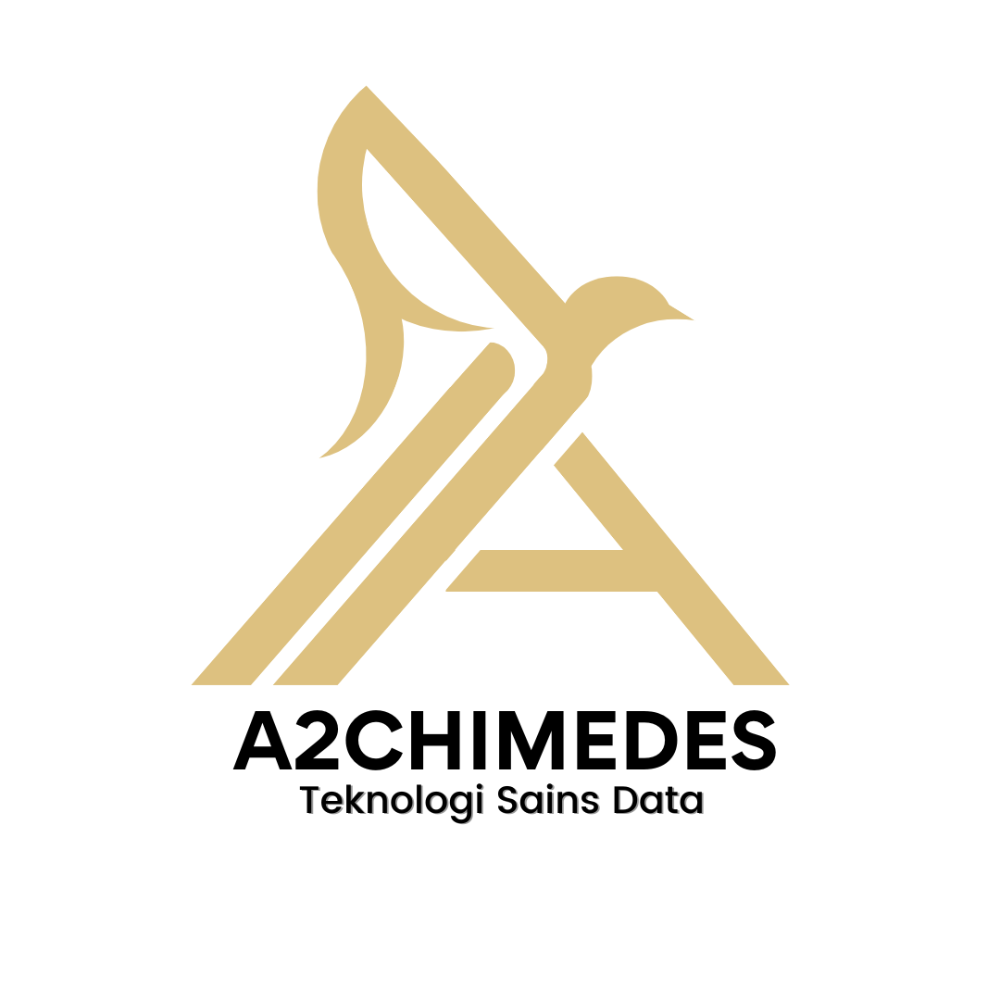

.Teknologi Sains Data 2021
A2CH1MEDES
ARCHIMEDES Adventorous and Ready for Challenge
in Measuring Data Exploration and Science
Adventurous = Bersifat keingintahuan (curiosity)
Ready for Challenge = Siap dengan segala keadaan (adaptive)
Measuring Data Exploration and Science = berfokus untuk berkotribusi
di bidang data dan dapat berkolaborasi dengan aspek sains lainnya
